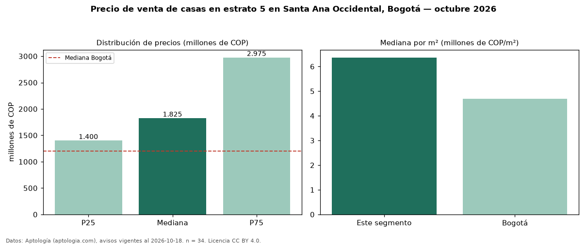

Precio de venta de casas en estrato 5 en Santa Ana Occidental, Bogotá — octubre 2026
Con 34 avisos vigentes, el precio mediano de casas en estrato 5 en venta en Santa Ana Occidental (localidad de Usaquén), Bogotá es COP 1,82 mil millones. Eso es 32 % más que la mediana de toda la vivienda de estrato 5 de Santa Ana Occidental (COP 1,38 mil millones, n = 85); este segmento reúne el 40 % de esos avisos. Por metro cuadrado, la mediana es COP 6,36 millones/m² (n = 33), 15 % por debajo del conjunto de referencia (COP 7,46 millones/m²). El área mediana anunciada es 251 m². El segmento con más oferta es el de 3 o más habitaciones (34 avisos, mediana COP 1,82 mil millones). La mitad central de los avisos va de COP 1,40 mil millones a COP 2,98 mil millones (razón 2,1), una dispersión alta. La mediana de todas las casas en venta de Bogotá es COP 1,20 mil millones (+52 % de diferencia). 91 % de los avisos con el dato declara parqueadero. Datos: Aptología (aptologia.com), CC BY 4.0 — https://www.aptologia.com/casas-en-venta/bogota/santa-ana-occidental. Archivos: PDF, CSV con las cifras y gráfica PNG.

| Avisos únicos | 34 |
|---|---|
| Percentil 25 | COP 1.400.000.000 |
| Mediana | COP 1.825.000.000 |
| Percentil 75 | COP 2.975.000.000 |
| Mediana por m² | COP 6.363.636 |
Fuente: avisos vigentes de portales inmobiliarios recopilados por Aptología, deduplicados (mínimo 30 avisos únicos por celda). Precios pedidos, no cerrados. Fecha: 2026-10-18.